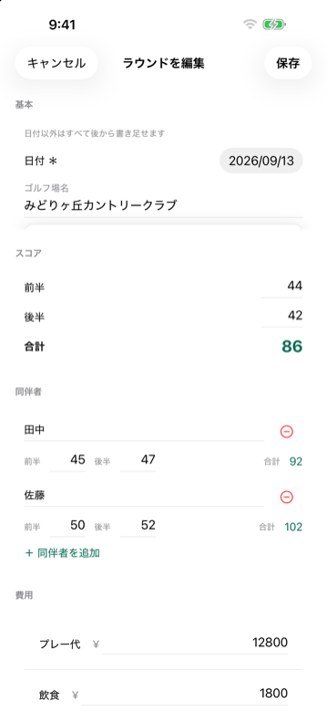
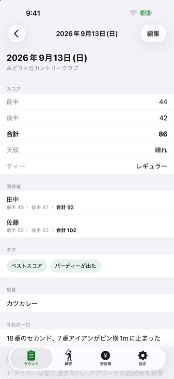
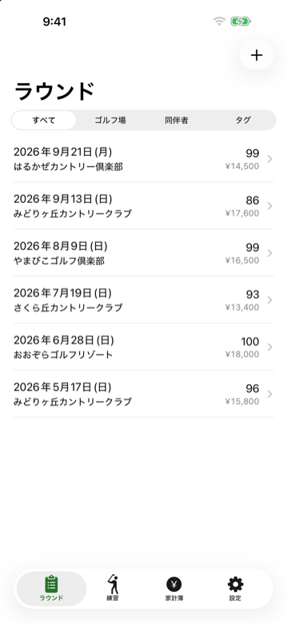
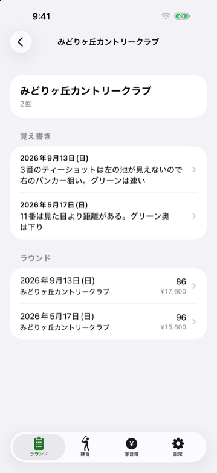
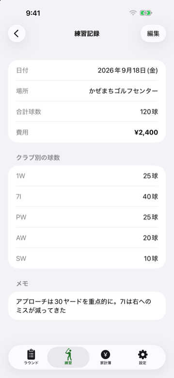
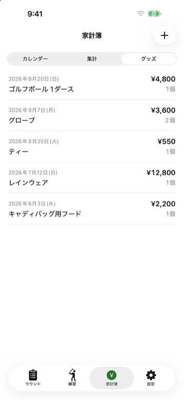
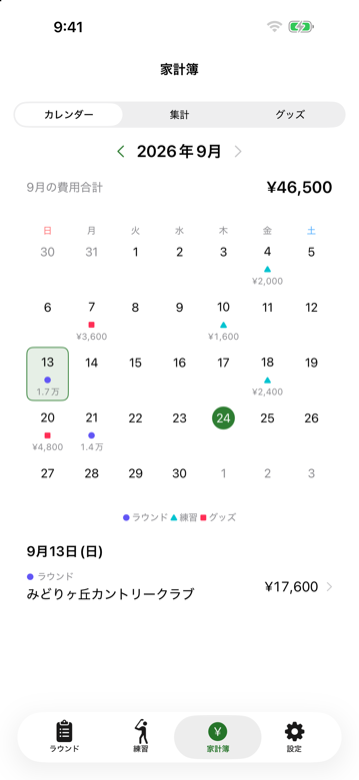
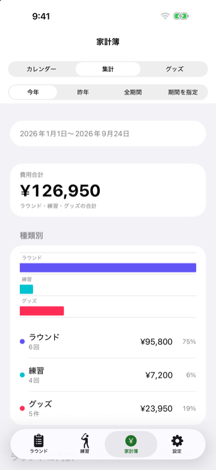
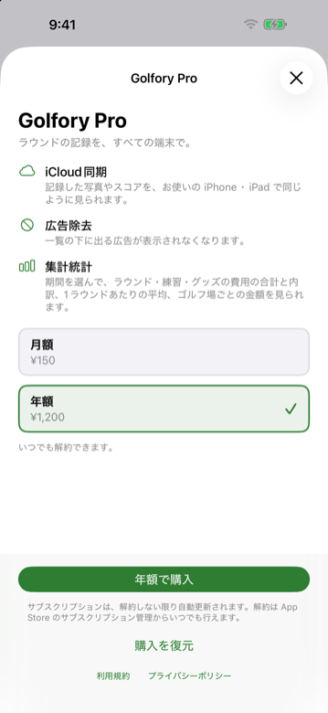

GOLF JOURNAL FOR iPHONE
いつ・どこで・誰と回って、いくら使ったか。
スコアはプレー中にスコアアプリで。Golfory は、プレーが終わったあとに開く記録帳です。
WHY
スコアアプリにはスコアが、カメラロールには写真が散らばっています。
「前に一緒に行ったとき、どうだったっけ」と話すとき、探すところから始まります。
18ホール分のスコアはきれいに残る。誰と回ったか、昼に何を食べたか、いくらかかったかは残らない。
その日の1ラウンドを、1画面で書き終わる。
練習とグッズの購入も、同じアプリに残せる。
01 ROUND
日付とゴルフ場名だけで保存できます。あとは残したい分だけ。前半・後半のスコア、同伴者とそのスコア、天候、ティー、昼食、タグ、今日の一打、振り返り、そのゴルフ場の覚え書き。
OB・ワンペナ・ロストボールを数えたい人だけ、設定でオンにすると入力欄が出ます。




02 LOOK BACK
「ラウンド」タブは、新しい順の一覧です。日付とゴルフ場名、スコア、その日にかかった費用が1行に出ます。
一覧の上で「ゴルフ場」「同伴者」「タグ」に切り替えれば、過去のラウンドを引き出せます。ゴルフ場を開くと、そこで残した覚え書きが日付ごとに並び、その下にそこで回ったラウンドが出ます。
無料版でも、記録できる件数に上限はありません。
03 PRACTICE & GOODS
練習の写真・動画も、複製は持たず参照だけを保存します。




04 MONEY
家計簿タブのカレンダーで、月ごとのラウンド・練習・グッズ購入と金額、月の合計がひと目で分かります。日付を選べば、その日の記録へ進めます。
集計（Golfory Pro）では、期間を選んで費用の合計と種類別・項目別の内訳、1ラウンドあたりの平均、ゴルフ場ごとの集計を確認できます。
カレンダーに載るのは記録済みのものだけです。これからの予定は登録しません。

PRICE
期間終了の24時間前までに解約されない限り、自動的に更新されます。解約は端末の「設定」＞Apple ID＞「サブスクリプション」から行えます。
WHAT IT DOESN'T DO